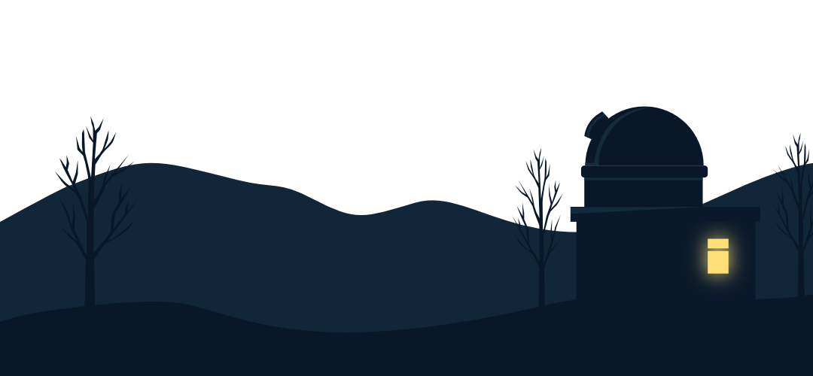

NIGHT OBSERVATORY
月曜をラクにする研究所
評価しない。急がせない。
夜に呼吸を戻す場所。
─ 夜の脳疲労観測所 ─

このアプリについて
眠れない夜に、
頑張らなくていいアプリ。
習慣化しなくていい。
クリアしなくていい。
開けない日があっても大丈夫。
ただ静かに、
自分の脳の疲れを観測して、
そのまま眠りに落ちるための場所です。
スコアも、ランキングも、改善率もありません。
あなたのあらゆる状態を、
この研究所は全肯定します。
観測内容
001
空模様チェック
今夜の脳の天気を、記号で静かに観測する。
改善も助言もない、ただの記録。
002
観測タスク
紙片を集める。レンズを拭く。
スコアのない、寝落ちするための単純作業。
003
資料室
観測の翌日に届く、圧倒的につまらない研究資料。
読まなくて大丈夫です。
004
呼吸する輪
脳疲労の状態に応じて変化するゲージ。
状態が悪くても、等しく美しい別の夜空。